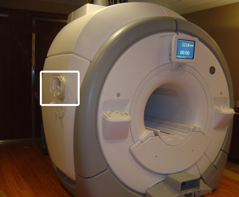

- 00000018WIA30497030GYZ
- id_123749121.6
- Sep 30, 2024, 7:18:02 AM
PAC Assembly Leakage Current Test
Prerequisites
| Required persons | Preliminary requirements | Procedure | Finalization |
|---|---|---|---|
| 1 | Not Applicable | 10 minutes | Not Applicable |
| Item | Quantity | Effectivity | Part number | Manufacturer |
|---|---|---|---|---|
| Dale 600/601 (120 VAC) Safety Analyzer | 1 | - |
46-328406G1 | - |
| Dale 600E/601E (220 VAC) Safety Analyzer | 1 | - |
46-328406G2 | - |
| Fluke ESA612 Electrical Safety Analyzer | 1 | - |
5453348 | - |
| ||||||||
About this task
Overview
When Safety Analyzer Kits are sent in for calibration, the units are being upgraded with the Dale 601/601E Safety Analyzer (generally Americas and Asia) or the Fluke ESA612 Safety Analyzer (generally Europe).
This procedure is divided into three sections: first the older model, Dale 600/600E; next the new model, Dale 601/601E; and finally the Fluke ESA612.
Data Sheet for Recording Leakage Current Data
About this task
Use the supplied data sheet to record the leakage current data. PAC Leakage Current Measurements is a reference of what is contained on the data sheet. Print the form. 2087555.pdf
| LEAD SELECT POSITION | METER READING NORMAL POSITION (microamps) | METER READING REVERSE POSITION (microamps) |
|---|---|---|
| Patient (Lead to Ground) Leakage Current | ||
| Right Leg (RL) | ||
| Right Arm (RA) | ||
| Left Arm (LA) | ||
| Left Leg (LL) | ||
| Patient (Lead to Lead) Auxiliary Current | ||
| RL | ||
| RA | ||
| LA | ||
| LL | ||
| M.A.P. (Isolation Tests) | ||
| ALL LEADS M.A.P. Test | ||
Using Dale 600/600E Safety Analyzer
Procedure
DANGER 
Plug the analyzer into a power source in the magnet room which allows access to the Patient Monitor Accessory hook on the left side of the magnet enclosure, while staying at least 20 inches (51 cm) from the magnet.Notice The Patient Monitor Accessory hook is on the left side of the magnet, regardless of system version. The example shown below is an MR450 system.
Figure 1. Patient Monitor Accessory Hook Location (Example) 
Using Dale 601/601E Safety Analyzer
Procedure
DANGER
Plug the analyzer into a power source in the magnet room which allows access to the Patient Monitor Accessory hook on the left side of the magnet enclosure, while staying at least 20 inches (51 cm) from the magnet.Notice The Patient Monitor Accessory hook is on the left side of the magnet, regardless of system version. The example shown below is an MR450 system.
Figure 4. Patient Monitor Accessory Hook Location (Example)
Using Fluke ESA612 Safety Analyzer
Setting up Fluke ESA612 Safety Analyzer
Procedure
DANGER
Follow below steps to setup the analyzer:Notice - Plug the analyzer into a power source in the magnet room which allows access to the Patient Monitor Accessory hook on the left side of the magnet enclosure, while staying as far away as possible from the magnet.
The Patient Monitor Accessory hook is on the left side of the magnet, regardless of system version. The example shown below is an MR450 system.
Figure 9. Patient Monitor Accessory Hook Location (Example) NoteAt facilities with 110-120 VAC, a fault error may appear when you power the meter on. Press F4 OK to clear the error, and continue.
- At the Patient Monitor Accessory hook, connect the Patient Lead cable and the Cardiac Lead Set at the ECG connector.
The ECG connector is round and is labeled with “ECG” or a heart symbol. The example shown below is an MR450w system.
Figure 10. ECG Connector (Example)
- Plug the analyzer into a power source in the magnet room which allows access to the Patient Monitor Accessory hook on the left side of the magnet enclosure, while staying as far away as possible from the magnet.
Testing Lead to Lead with the Fluke ESA612 Safety Analyzer
Procedure
Testing Lead to Ground with the Fluke ESA612 Safety Analyzer
Procedure
Finalization
Procedure
DANGER
Disconnect the Cardiac Lead Set from the analyzer.Notice - Remove the Patient Lead cable from the ECG connector.
- Unplug the analyzer.